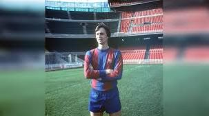

Ganadores Principales
Lionel Messi
Lionel Andrés Messi Cuccittini (Rosario, 24 de junio de 1987), conocido como Leo Messi, es un futbolista argentino que juega como delantero o centrocampista. Desde 2023, integra el plantel del Inter Miami de la MLS canadoestadounidense. Es también internacional con la selección de Argentina, de la que es capitán. Con el Fútbol Club Barcelona, al que estuvo ligado más de veinte años, ganó 35 títulos, entre ellos, diez de La Liga, cuatro de la Liga de Campeones de la UEFA y siete de la Copa del Rey. Considerado con frecuencia el mejor jugador del mundo y uno de los mejores de todos los tiempos, es el único en la historia que ha ganado, entre otras distinciones, ocho veces el Balón de Oro, ocho premios de la FIFA al mejor jugador del mundo, seis Botas de Oro y dos Balones de Oro de la Copa Mundial de Fútbol. En 2020, se convirtió en el primer futbolista y el primer argentino en recibir un premio Laureus y fue incluido en el Dream Team del Balón de Oro.
ver más...Cristiano Ronaldo
Cristiano Ronaldo dos Santos Aveiro (Funchal, Madeira; 5 de febrero de 1985), es un futbolista portugués. Juega como extremo izquierdo o delantero y su equipo actual es el Al-Nassr F. C. de la Liga Profesional Saudí. Es internacional absoluto con la selección de Portugal, de la cual es capitán, máximo goleador histórico y jugador con más presencias con 206 partidos, logro alcanzado en las eliminatorias para la Eurocopa 2024, reconocido por el Libro Guinness de los récords. Considerado con frecuencia el mejor y más completo futbolista, así como el mayor goleador del mundo, además de uno de los mejores de todos los tiempos
ver más...Michel Platini
(Joeuf, 1955) Futbolista francés. Sin duda el jugador más carismático de la historia del fútbol galo, fue capitán y alma de la selección de su país durante la década de los ochenta. Inició su carrera profesional en el Nancy, equipo con el que fue campeón de Copa en la temporada 1977-78. En aquel momento Platini era ya descrito como un futbolista de enorme calidad y los especialistas le predecían un espléndido futuro profesional; de hecho, en 1977 contaba ya con el Balón de Bronce europeo.
ver más...Johan Cruyff
(Amsterdam, 1947 - Barcelona, 2016) Jugador y entrenador de fútbol holandés. Hijo de una familia de modesta situación económica, a los diez años ingresó en el Ajax de Amsterdam, club en el cual permanecería hasta 1973 y con el que obtendría seis títulos de Liga y tres copas de Europa. Entre 1973 y 1978 jugó en el F. C. Barcelona, con el cual consiguió el Campeonato de Liga de 1974. Durante dichos años fue nombrado mejor futbolista europeo en tres ocasiones (1971, 1973 y 1974) y en 1974 fue designado mejor jugador del Mundial disputado aquel año. Tras su paso por el F. C. Barcelona recaló brevemente en la liga estadounidense y luego en el Levante español, para incorporarse de nuevo al Ajax como jugador, poco antes de retirarse de la práctica deportiva. Su posterior faceta de entrenador, que inició en el Ajax, estaría tan plagada de éxitos como la de jugador. Destacó sobre todo por su talante ofensivo y logró sus mayores victorias con el F. C. Barcelona, club al que entrenó entre 1988 y 1996. Durante dichos años logró cuatro ligas consecutivas (1991, 1992, 1993 y 1994) y una copa de Europa (1992). En 1998 creó la Universidad Johan Cruyff, que imparte estudios para la administración y gestión de entidades deportivas. En 1999 fue homenajeado en Barcelona y Amsterdam y fue nombrado asesor de la UEFA.
ver más... 